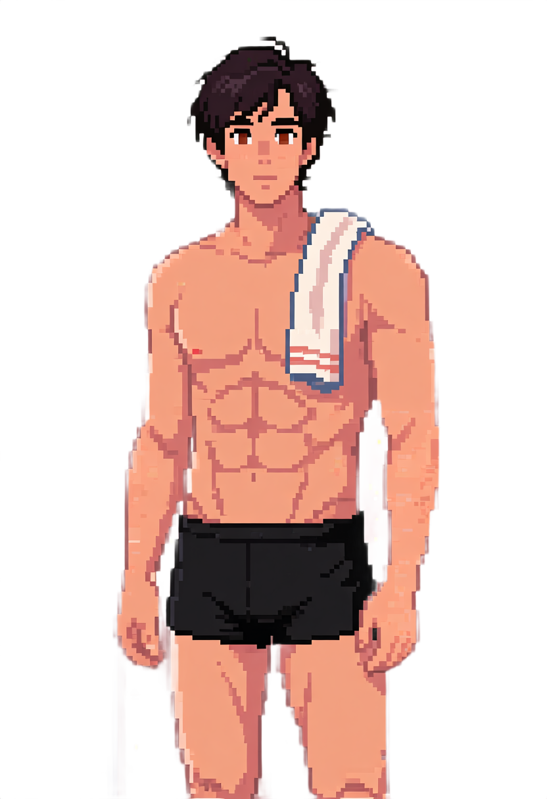
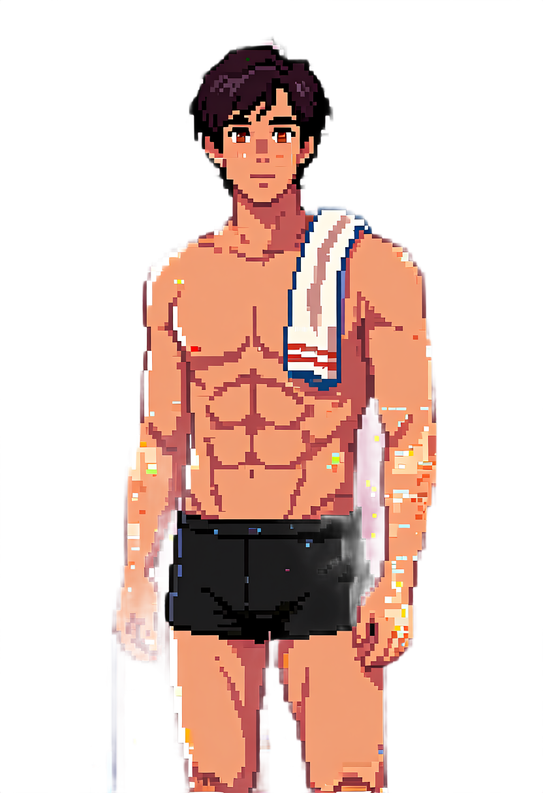
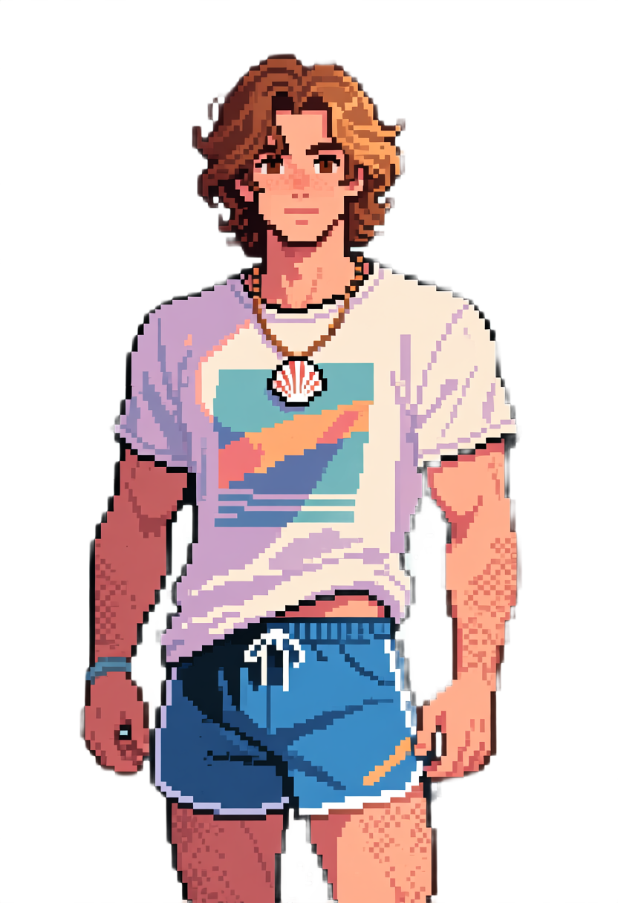
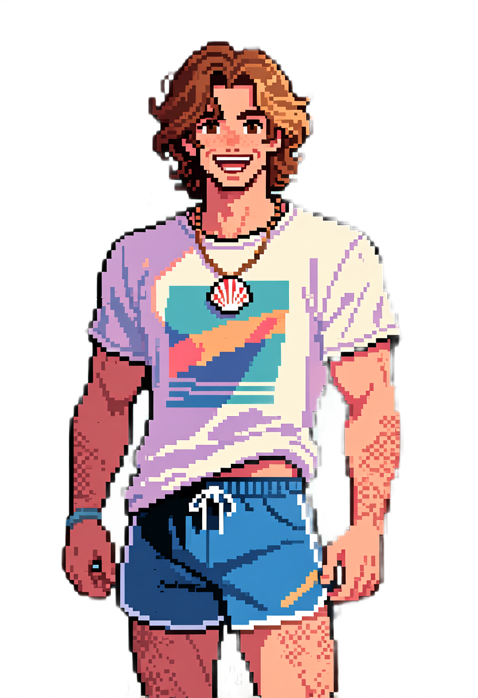
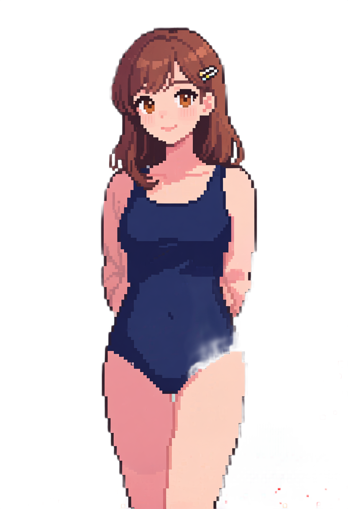
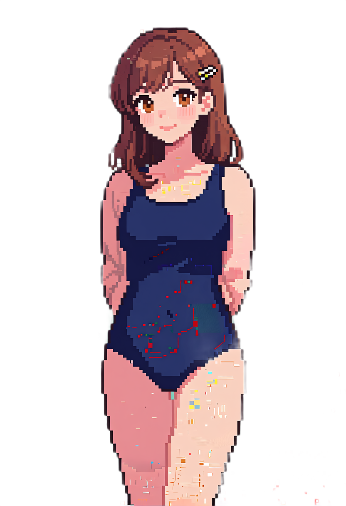
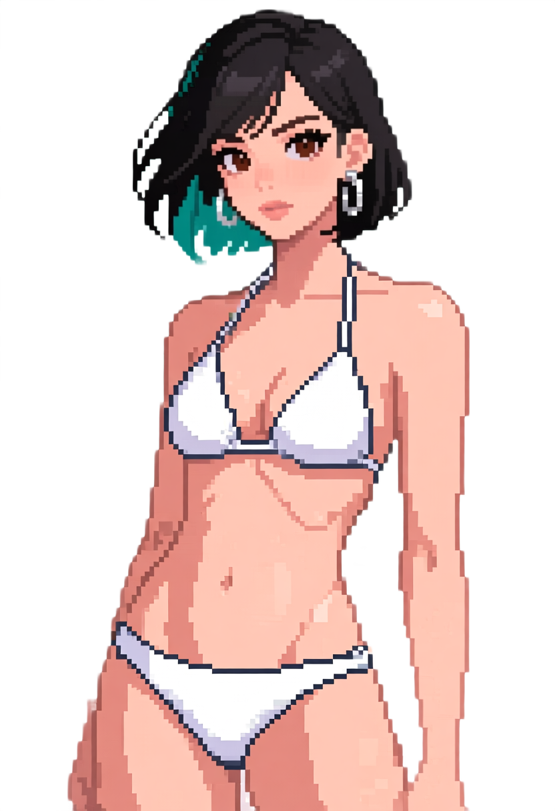
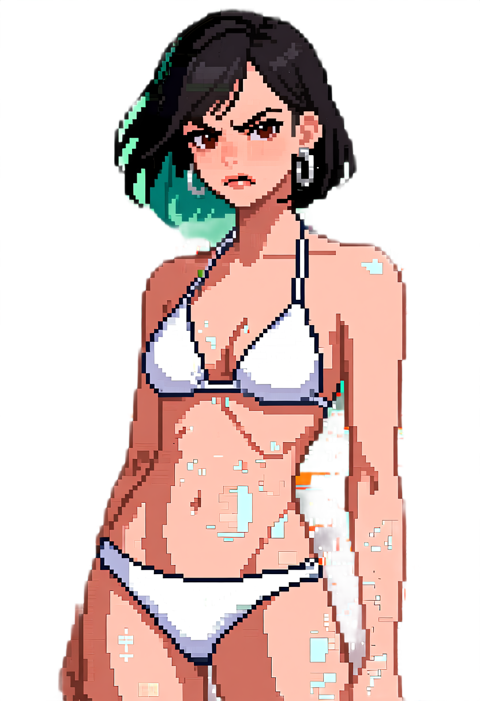

Ron Azulay
black swim trunks, shirtless


Four adult characters · neutral versus generated expression · no placeholder artwork
black swim trunks, shirtless


blue swim trunks, shirtless


navy one-piece swimsuit


white bikini

